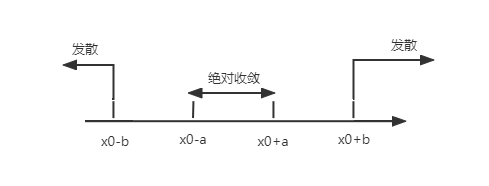

§7.3 幂级数
一、函数项级数
定义：ua(x) 是定义在I上的函数，称 n=1∑∞un(x) 是定义在I上的函数项级数
对于 x0∈I，若 n=1∑∞un(x0) 收敛，则称 x0 为 n=1∑∞un(x) 的收敛点；否则，称 x0 为发散点。所有的收敛点构成的集合称为收敛域。在收敛域上，有 s(x)=n=1∑∞un(x)
例如：n=1∑∞xn 收敛域 (−1,1)，s(x)=n=1∑∞1−xx,x∈(−1,1)；n=2∑∞xn=1−xx2,x∈(−1,1)，n=2∑∞(−x)n−2=1+x1,x∈(−1,1)
二、幂级数的收敛半径及收敛域
收敛域
讨论敛散性
求法步骤：
- [比值法/极值法] ρ(x)=n→∞limun(x)un+1(x) 或 n→∞limn∣un(x)∣
- ρ(x)<1⇒x∈(a,b) 绝对收敛
- ρ(x)=1，将 x=a、x=b 代入检查 n=1∑∞un(a)、n=1∑∞un(b) 敛散性
- 得到收敛域：(a,b),[a,b],[a,b),(a,b]
定义1
n=0∑∞an(x−x0)n=a0+a1(x−x0)+a2(x−x0)2+⋯ 在 x=x0 处收敛，s(x0)=a0
定理1（Abel定理）
- 若 n=0∑∞anxn 在 x=x0=0 处收敛，则 n=0∑∞anxn 在 (−∣x0∣,∣x0∣) 绝对收敛
- 若 n=0∑∞anxn 在 x=x1 处发散，则 n=0∑∞anxn 在 (−∞,−∣x1∣)∪(∣x1∣,+∞) 绝对收敛
例题
-
求 n=1∑∞n(n+1)(x2+x+1)n 的收敛域
解：ρ(x)=n=1∑∞nn(n+1)(x2+x+1)n=x2+x+1<1,−1<x<0
x=−1，n=1∑∞n(n+1)1 收敛，x=0，n=1∑∞n(n+1)1 收敛。故收敛域为：[−1,0]
-
求 n=1∑∞n(−1)n(2x+1x−1)n 的收敛域
解：
ρ(x)=n→∞limn+1(−1)n+1⋅(2x+1x−1)n+1⋅(−1)nn⋅(2x+1x−1)−n=n→∞lim2x+1x−1⋅(−1)⋅n+1n=2x+1x−1
令 ρ(x)<1，则 −1<2x+1x−1<1，x<−2 或 x>0。
当 x=−2 时，n=1∑∞n(−1)n 收敛；x=0 时，n=1∑∞n1 发散。故收敛域为 (−∞,−2]∪(0,+∞)
收敛半径
定义2
n=0∑∞anxn 当 ∣x∣<R 时绝对收敛，∣x∣>R 时发散，称 R 为收敛半径，(−R,R) 为收敛区间
n=0∑∞an(x−x0)n 的敛散分布

- 推论
- 若在 n=0∑∞anxn 在 x=x0 处收敛，则 R≥∣x0∣
- 若在 n=0∑∞anxn 在 x=x0 处发散，则 R≤∣x0∣
- 若在 n=0∑∞anxn 在 x=x0 处条件收敛，则 R=∣x0∣
- R=0 仅在 x=0 处收敛，收敛域为 {0}
- R=+∞ 对于任意 x 都收敛，收敛域 (−∞,+∞)
- 0<R<+∞ 对于 ∣x∣<R 绝对收敛，∣x∣>R 发散
例题
- n=1∑∞anxn 在 x=2 处条件收敛，则 R=2
- n=1∑∞an(x−2)n 在 x=−2 处条件收敛，则在 x=5 处绝对收敛， x=7 处无法判断。
定理2
n=0∑∞anxn（不缺项），若 ρ=n→∞limanan+1 或 x→∞limn∣an∣，则：
- ρ>0，R=ρ1，收敛区间 (−ρ1,ρ1)
- ρ=0，R=+∞
- ρ=+∞，R=0
例题II
-
求幂级数 n=1∑∞n⋅2n(−1)n+1xn 的R与收敛域
解：ρ=n→∞limanan+1=n→∞lim2(n+1)n=21
R=ρ1=2，区间 (−2,2)
x=2，级数为 n=1∑∞n(−1)n+1，收敛
x=−2，级数为 n=1∑∞−n1，发散
∴ 收敛域为 (−2,2]
-
求幂级数 n=0∑∞3n2+(−1)nxn 的收敛域
解：ρ=n→∞limn3n2+(−1)n=31
R=ρ1=3，区间 (−3,3)
x=3，n=0∑∞[2+(−1)n] 发散
x=−3，n=0∑∞[2×(−1)n+1] 发散
∴ 收敛域为 D=(−3,3)
-
求幂级数 n=1∑∞3n(−1)n−1x2n+1 的收敛域
解：ρ(x)=n→∞lim3n+1(−1)n⋅(−1)n−13n⋅x2n+1x2n+3=31x2
令 ρ(x)<1，则 −3<x<3
x=3，n=1∑∞3⋅(−1)n−1，发散
x=−3，n=1∑∞(−3)(−1)n−1，发散
∴ 收敛域 (−3,3)
三、幂级数的运算
设两级数 n=0∑∞anxn 与 n=0∑∞bnxn 的收敛半径分别为 R1 和 R2。
1. 加减法
在收敛域的公共部分，有
n=0∑∞anxn±n=0∑∞bnxn=n=0∑∞(an±bn)xn
2. 乘法
在收敛域的公共部分 (−R,R)R=min{R1,R2}，有
(n=0∑∞anxn)(n=0∑∞bnxn)=n=0∑∞(k=0∑nakbn−k)xn
3. 除法
n=0∑∞bnxnn=0∑∞anxn=n=0∑∞cnxn(b0=0)
其中 a0=b0c0，a1=b1c0+b0c1，a2=b2c0+b1c1+b0c2……
四、幂级数和函数的性质
1. 极限与求和可交换
s(x) 在收敛域上（单侧）连续，即 x→x0lims(x)=s(x0)=n=0∑∞x→x0limanxn
x→x0limn=0∑∞anxn=n=0∑∞(x→x0limanxn)
2. 积分与求和可交换
s(x) 在收敛域上可积，其逐项积分公式为
∫0xs(t)dt=∫0x(n=0∑∞antn)dt=n=0∑∞(∫0xantndt)=n=0∑∞n+1anxn+1
3. 求导与求和可交换
s(x) 在收敛区间可导，其逐项求导公式为
s′(x)=(n=0∑∞anxn)′=n=0∑∞(anxn)′=n=0∑∞nanxn−1
例题
-
n=0∑∞anxn 在 x=2 条件收敛，则 n=0∑∞nanxn−1 的收敛半径为2。
-
求 n=1∑∞n(−1)n−1xn 的和函数
解：ρ=n→∞limn+1n⋅(−1)=1，R=ρ1=1，收敛区间 (−1,1)
x=1，n=1∑∞n(−1)n−1 收敛；x=−1，n=1∑∞(−n1) 发散
∴ 收敛域 (−1,1]
s′(x)=n=1∑∞(−1)n−1xn−1=1−(−x)1=1+x1
∫0xs′(t)dt=∫0x1+t1dt
s(x)−s(0)=ln(1+x)
s(x)=ln(1+x),x∈(−1,1)
∵s(1)=x→1−lims(x)=ln2=n=1∑∞n(−1)n−1
综上所述，s(x)=ln(1+x),x∈(−1,1]
-
求 n=1∑∞n(n+1)xn 的和函数
解：易知其收敛域为 (−1,1)
∫0xs(t)dt=∫0xn=1∑∞n(n+1)tndt=n=1∑∞∫0xn(n+1)tndt=n=1∑∞nxn+1(x∈(−1,1))=x2n=1∑∞nxn−1
令 s1(x)=n=1∑∞nxn−1，n=1∑∞s1(t)dt=n=1∑∞∫0xntn−1dt=n=1∑∞xn=1−xx
s1(x)=(1−xx)=(1−x)21
∫0xs(t)dt=x2s1(x)=(1−x)2x2
s(x)=[(1−x)2x2]′=(1−x)32xx∈(−1,1)
-
求 n=1∑∞n(n+1)1xn 的和函数
解：其收敛域为 [−1,1]
s(x)=x1n=1∑∞n(n+1)1xn+1(x=0)
s1(x)=n=1∑∞n(n+1)1xn+1x∈(−1,0)∪(0,1)
s1′(x)=n=1∑∞n1xn，s1′′(x)=n=1∑∞xn−1=1−x1
∫0xs1′′(t)dt=∫0x1−t1dt
s1′(x)−s1′(0)=−ln∣1−t∣0x
∫0xs1′(t)dt=−∫0xln(1−t)dt
s1(x)−s1(0)=−[ln(1−t)t∣0x+∫0xt⋅1−t1dt]=−xln(1−x)+x+ln(1−x)
s(x)=−ln(1−x)+1+xln(1−x)x∈[−1,0)∪(0,1)
s(0)=0，s(1)=x→1−lims(x)=1+x→1−limxln(1−x)(1−x)=1
综上，s(x)=⎩⎨⎧1−ln(1−x)+xln(1−x)x∈[−1,0)∪(0,1)0x=01x=1
-
求 n=0∑∞n!xn 的和函数
解：ρ=n→∞lim(n+1)!xn+1⋅xnn!=0，R=+∞，收敛域为 (−∞,+∞)
s(x)=∑n=0∞(n!xn)′=∑n=1∞(n−1)!xn−1=∑n=0∞n!xn
s′(x)=s(x)
s(x)=c⋅ex
∵s(0)=1
∴C=1，s(x)=ex